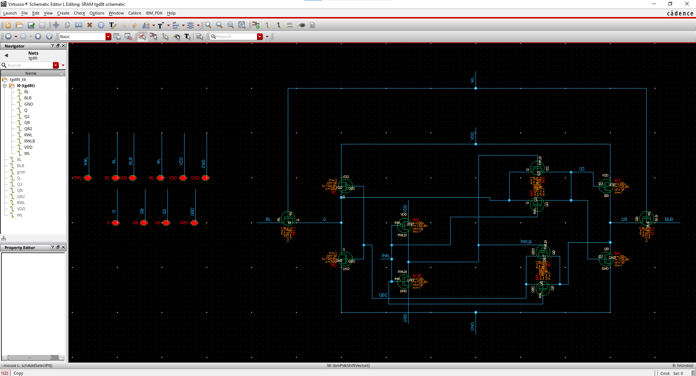
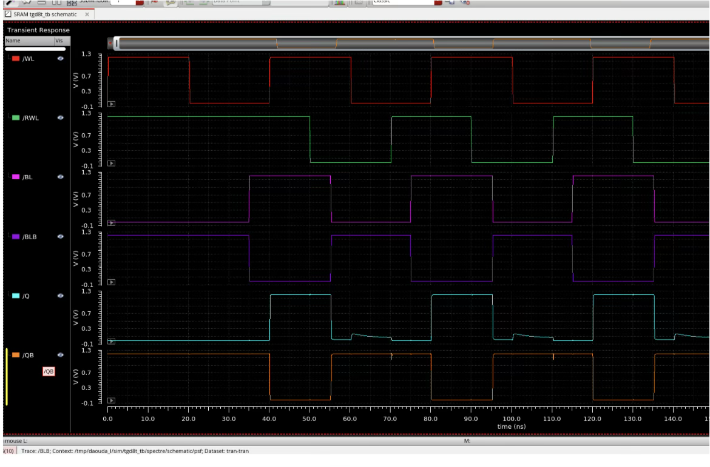
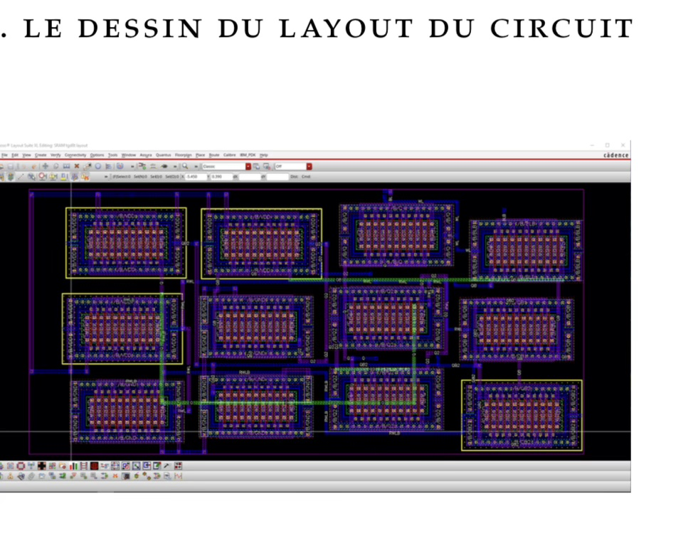
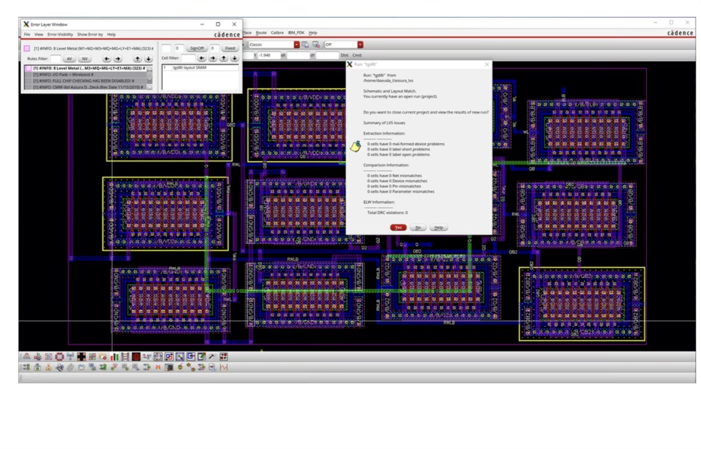

← Retour aux projets
★ Cours de 2e cycle · Maîtrise Honors · MIC7345
Contexte académique
Cours MIC7345 — 2e cycle (niveau maîtrise)
Profil Honors — accès restreint
Cadence Virtuoso — outil VLSI industriel
Stack technique
Cadence Virtuoso
VLSI
Simulation temporelle
Layout
DRC / LVS
Post-layout
Étapes de conception
- Conception du schéma électrique de la cellule TGD8T (8 transistors CMOS)
- Simulation temporelle des opérations de lecture et d'écriture
- Analyse de la stabilité (SNM — Static Noise Margin)
- Analyse de la consommation et des délais de propagation
- Réalisation du layout physique en respectant les règles DRC
- Vérification LVS (Layout vs Schematic) pour conformité schéma/layout
- Simulation post-layout avec extraction des parasites
- Comparaison performances pré-layout / post-layout
Points techniques clés
- Architecture TGD8T : transistors de passage + inverseurs croisés + transistors de grille
- Optimisation du rapport largeur/longueur pour équilibrer lecture, écriture et stabilité
- Respect des contraintes DRC (Design Rule Check) de la technologie cible
- Impact des parasites post-layout sur les temps de propagation et la consommation
- Validation complète de la fonctionnalité mémoire (lecture 0/1, écriture 0/1) par simulation
Fonctionnement du circuit
Écriture
- Scénario 1 — écriture d'un 1 logique : quand WL = 1, RWL = 1, BL = 1, BLB = 0, le nœud Q stocke la valeur 1 et QB la valeur 0.
- Scénario 2 — écriture d'un 0 logique : quand WL = 1, RWL = 1, BL = 0, BLB = 1, le nœud Q stocke la valeur 0 et QB la valeur 1.
Lecture
- WL = 1, RWL = 0, BL et BLB préchargées à VDD : lecture du contenu de la cellule sans modification de l'état stocké.
Mode de maintien
- Quand WL = 0, les valeurs de Q et QB restent inchangées.
Résultats de simulation

Schéma électrique TGD8T

Simulation temporelle lecture/écriture

Layout Cadence Virtuoso

Vérification DRC/LVS
Résultats complets disponibles sur demande lors d'un entretien.